리본 바의 각 카테고리 별 기능에 대하여 설명 합니다.
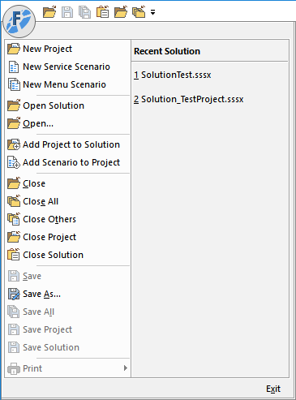
| Menu | Description | Shortcut |
|---|---|---|
New Project |
프로젝트 생성 | Ctrl + Shift + N |
| New Service Scenario | 서비스 시나리오 생성(.ssfx) | Ctrl + N |
| New Menu Scenario | 메뉴 시나리오 생성(.msfx) | |
| Open Solution | 솔루션 및 시나리오 오픈 | Ctrl + Shift + O |
| Open | 시나리오 파일 오픈 | Ctrl + O |
| Add Project to Solution | 프로젝트를 솔루션에 추가 | |
| Add Scenario to Project | 시나리오를 프로젝트에 추가 | |
| Close | 현재 편집 중인 시나리오 파일 닫기 | |
| Close All | 오픈된 시나리오 파일 모두 닫기 | |
| Close Others | 현재 편집 중인 시나리오를 제외하고 모두 닫기 | |
| Close Project | 프로젝트 닫기 | |
| Close Solution | 솔루션 닫기 | |
| Save | 현재 편집 중인 시나리오 파일 저장 | Ctrl + S |
| Save As... | 현재 편집 중인 시나리오 다른 이름으로 저장 | Ctrl + Shift + S |
| Save All | 수정된 시나리오 모두 저장 | |
| Save Project | 프로젝트 저장 | |
| Save Solution | 솔루션 저장 | |
| 화면 프린트 | ||
| Recent Solution | 가장 최근에 오픈한 솔루션 리스트 | |
| Exit | ForCus Studio 종료 | Alt + F4 |
Category Home (Shortcut : Home)
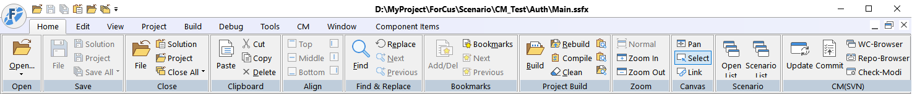
| Panel | Menu | Submenu | Description | Shortcut |
|---|---|---|---|---|
| Open | Open... | 솔루션 및 시나리오 오픈 | Ctrl + Shift + O | |
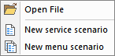 |
Open File | 시나리오 파일 오픈 | Ctrl + O | |
| New service scenario | 서비스 시나리오 생성 | Ctrl + N | ||
| New menu scenario | 메뉴 시나리오 생성 | |||
| Save | File | 현재 편집 중인 시나리오 파일 저장 | Ctrl + S | |
| Solution | 솔루션 저장 | |||
| Project | 프로젝트 저장 | |||
| Save all | 수정된 시나리오 모두 저장 | |||
| Save File As... | 현재 편집 중인 시나리오 다른 이름으로 저장 | Ctrl + Shift + S | ||
| Close | File | 현재 편집 중인 시나리오 파일 닫기 | ||
| Solution | 솔루션 닫기 | |||
| Project | 프로젝트 닫기 | |||
| Close All | 오픈된 시나리오 파일 모두 닫기 | |||
| Close Others | 현재 편집 중인 시나리오를 제외하고 모두 닫기 | |||
| Clipboard | Paste | 붙여넣기 | Ctrl + V | |
| Cut | 잘라내기 | Ctrl + X | ||
| Copy | 복사 | Ctrl + C | ||
| Delete | 삭제 | Delete | ||
| Align | Top | 가로 위 정렬 | ||
| Middle | 가로 가운데 정렬 | Ctrl + D | ||
| Bottom | 가로 아래 정렬 | |||
| Left | 세로 왼 정렬 | |||
| Center | 세로 가운데 정렬 | Ctrl + E | ||
| Right | 세로 오른 정렬 | |||
| Find & Replace | Find | 찾기 | Ctrl + F | |
| Next | 찾은 다음 아이템 | F3 | ||
| Previous | 찾은 이전 아이템 | Ctrl + F3 | ||
| Replace | 치환 | Ctrl + R | ||
| Bookmarks | Add / Del | 북마크 설정 / 제거 | Ctrl + F2 | |
| Bookmarks | 북마크 리스트 | Alt + F2 | ||
| Next | 다음 북마크 | F2 | ||
| Previous | 이전 북마크 | Shift + F2 | ||
| Project Build | Build | 프로젝트 빌드 | F7 | |
| Rebuild | 프로젝트 다시 빌드 | |||
| Clean | 프로젝트 정리 | |||
| Open SXML | 빌드된 SXML 파일이 있는 폴더를 윈도우 탐색기로 열기 | |||
| Stop | 빌드 중지 | |||
| Compile | 현재 편집 중인 시나리오 파일 컴파일 | Ctrl + F7 | ||
| View SXML | 빌드된 SXML 파일 보기 (기본 Notepad) | Shift + F8 | ||
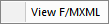 |
Viw F / MXML | 컴파일 한 현재 편집 중인 시나리오 파일(.fxml, .mxml) 보기 (기본 Notepad) | F8 | |
| Zoom | Normal | 편집 화면 정상 | ||
| Zoom In | 편집 화면 확대 | |||
| Zoom Out | 편집 화면 축소 | |||
| Canvas | Pan | 편집 화면 이동 | ||
| Select | 아이템 선택 | |||
| Link | 아이템 링크 | Insert | ||
| Scenario | Open List | 오픈된 시나리오 파일 리스트 보기 | ||
| Scenario List | 프로젝트별 시나리오 파일 리스트 보기 | |||
| CM(SVN) | Update | Working copy파일을 Remote Repository의 파일로 갱신 | ||
| Commit | Working copy의 추가, 수정, 삭제한 파일들을 Remote Repository로 업데이트 | |||
| WC-Browser | Working copy browser : 로컬 탐색기 | |||
| Repo-Browser | Remote Repository Browser : 원격 저장소 탐색기 | |||
| Check-Modi | Check modified : 변경된 파일 리스트 보기 |
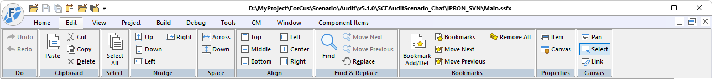
| Panel | Menu | Submenu | Description | Shortcut |
|---|---|---|---|---|
| Do | Undo | 실행취소 | Ctrl + Z | |
| Redo | 다시실행 | Ctrl + Y | ||
| Clipboard | Paste | 붙여넣기 | Ctrl + V | |
| Cut | 잘라내기 | Ctrl + X | ||
| Copy | 복사 | Ctrl + C | ||
| Delete | 삭제 | Delete | ||
| Select | Select All | 모두 선택 | Ctrl + A | |
| Nudge | Up | 아이템 위로 이동 | Up | |
| Down | 아이템 아래로 이동 | Down | ||
| Left | 아이템 왼쪽으로 이동 | Left | ||
| Right | 아이템 오른쪽으로 이동 | Right | ||
| Space | Across | 아이템간 가로 간격 | ||
| Down | 아이템간 세로 간격 | |||
| Align | Top | 가로 위 정렬 | ||
| Middle | 가로 가운데 정렬 | Ctrl + D | ||
| Bottom | 가로 아래 정렬 | |||
| Left | 세로 왼 정렬 | |||
| Center | 세로 가운데 정렬 | Ctrl + E | ||
| Right | 세로 오른 정렬 | |||
| Find & Replace | Find | 찾기 | Ctrl + F | |
| Move Next | 찾은 다음 아이템 | F3 | ||
| Move Previous | 찾은 이전 아이템 | Ctrl + F3 | ||
| Replace | 치환 | Ctrl + R | ||
| Bookmarks | Bookmark Add / Del | 북마크 설정 / 제거 | Ctrl + F2 | |
| Bookmarks | 북마크 리스트 | Alt + F2 | ||
| Move Next | 다음 북마크 | F2 | ||
| Move Previous | 이전 북마크 | Shift + F2 | ||
| Remove All | 모든 북마크 제거 | |||
| Properties | Item | 아이템 속성 | ||
| Canvas | 편집 화면 속성 | |||
| Canvas | Pan | 편집 화면 이동 | ||
| Select | 아이템 선택 | |||
| Link | 아이템 링크 | Insert |
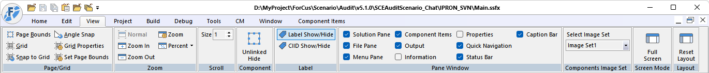
| Panel | Menu | Submenu | Description | Shortcut |
|---|---|---|---|---|
| Page / Grid | Page Bounds | 편집 화면 페이지 경계 표시 | ||
| Grid | 편집 화면 그리드 표시 | |||
| Snap to Grid | 그리드 눈금에 아이템 맞춤 | |||
| Angle Snap | 아이템 회전시 일정 각도로 회전 | |||
| Grid Properties | 그리드 속성 설정 | |||
| Zoom | Normal | 편집 화면 정상 | ||
| Zoom In | 편집 화면 확대 | |||
| Zoom Out | 편집 화면 축소 | |||
| Zoom | 편집 화면 확대(마우스 왼 클릭 및 드래그) / 축소(마우스 오른 클릭) | |||
| Percent | 편집 화면 확대 퍼센트 | |||
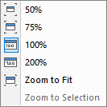 |
50% | 편집 화면 50% 확대 | ||
| 75% | 편집 화면 75% 확대 | |||
| 100% | 편집 화면 100% 확대 | |||
| 200% | 편집 화면 200% 확대 | |||
| Zoom to Fit | 적당한 크기로 편집 화면 확대 | |||
| Zoom to Selection | 선택된 아이템 중심으로 편집 화면 확대 | |||
| Scroll | Size | 캔버스 스크롤 사이즈 | ||
| Component | Unlinked Hide | 링크되지 않은 아이템 숨김 | ||
| Label | Label Show / Hide | 아이템 라벨 Show / Hide | ||
| CIID Show / Hide | 컴포넌트 아이템 ID Show / Hide | |||
| Pane Window | Solution Pane | Workspace Window Solution View Show / Hide | ||
| File Pane | Workspace Window File View Show / Hide | |||
| Menu Pane | Workspace Window Menu View Show / Hide | |||
| Component Items | Component Items Bar Show / Hide | |||
| Output | Output Window Show / Hide | |||
| Information | Information Window Show / Hide | |||
| Properties | Properties Window Show / Hide | |||
| Quick Navigation | Quick Navigation Show / Hide | |||
| Status Bar | Status Bar Show / Hide | |||
| Caption Bar | Caption Bar Show / Hide | |||
| Components Image Set | Select Image Set | 컴포넌트 아이템 이미지 세트 선택 | ||
| Screen Mode | Full Screen | 전체 화면 모드 | Ctrl + H | |
| Layout | Reset Layout | ForCus Studio 화면 레이아웃 초기화 |
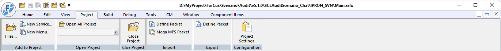
| Panel | Menu | Submenu | Description | Shortcut |
|---|---|---|---|---|
| Add to Project | Files... | 시나리오를 프로젝트에 추가 | ||
| New Service... | 서비스 시나리오 생성하여 프로젝트에 추가 | Ctrl + N | ||
| New Menu... | 메뉴 시나리오 생성하여 프로젝트에 추가 | |||
| Open Project | Open All Project | 솔루션의 모든 프로젝트 열기 | ||
| Close Project | Close Project | 프로젝트 닫기 | ||
| Import | Define Packet | Excel 로 정의된 전문을 읽어서 DefinePacket 아이템 생성 | ||
| Mega MPS Packet | 텍스트에 정의된 전문을 읽어서 DefinePacket 아이템 생성 | |||
| Export | Define Packet | DefinePacket 아이템의 내용을 Excel 로 출력 | ||
| Configuration | Project Settings | 프로젝트 설정 |
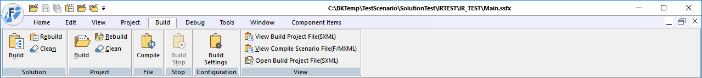
| Panel | Menu | Submenu | Description | Shortcut |
|---|---|---|---|---|
| Solution | Build | 솔루션 빌드 | Ctrl + Shift + B | |
| Rebuild | 솔루션 다시 빌드 | |||
| Clean | 솔루션 정리 | |||
| Project | Build | 프로젝트 빌드 | F7 | |
| Rebuild | 프로젝트 다시 빌드 | |||
| Clean | 프로젝트 정리 | |||
| File | Compile | 현재 편집 중인 시나리오 파일 컴파일 | Ctrl + F7 | |
| Stop | Build Stop | 빌드 중지 | ||
| Configuration | Build Settings | 빌드 구성 설정 | ||
| View | View Build Project File(SXML) | 빌드된 SXML 파일 보기 (기본 Notepad) | Shift + F8 | |
| View Compile Scenario File(F/MXML) | 컴파일 한 현재 편집 중인 시나리오 파일(.fxml, .mxml) 보기 (기본 Notepad) | F8 | ||
| Open Build Project File(SXML) | 빌드된 SXML 파일이 있는 폴더를 윈도우 탐색기로 열기 |
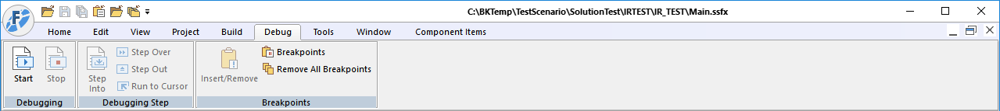
| Panel | Menu | Submenu | Description | Shortcut |
|---|---|---|---|---|
| Debugging | Start | 디버깅 시작, 중단점 까지 디버깅 진행 | F5 | |
| Stop | 디버깅 중지 | Ctrl + F5 | ||
| Debugging Step | Step Into | 다음 아이템 진행, SubCall 인 경우 호출 함수로 이동 | F11 | |
| Step Over | 다음 아이템 진행 | F10 | ||
| Step Out | 함수에서 나가기 | Shift + F11 | ||
| Run to Cursor | 클릭한 아이템 까지 디버깅 진행 | Ctrl + F10 | ||
| Breakpoints | Insert / Remove | 중단점 설절 / 제거 | F9 | |
| Breakpoints | 중단점 리스트 | Ctrl + B | ||
| Remove All Breakpoints | 모든 중단점 제거 |
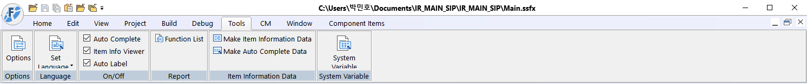
| Panel | Menu | Submenu | Description | Shortcut |
|---|---|---|---|---|
Options |
Options | 옵션 설정 | ||
| Language | Set Language | English | 언어 설정 영어 | |
| Korean | 언어 설정 한국어 | |||
| On / Off | Auto Complete | 자동 완성 켜고 / 끄기 | ||
| Item Info Viewer | 아이템 정보 뷰어 켜고 / 끄기 | |||
| Auto Label | 자동 아이템 라벨 켜고 / 끄기 | |||
| Report | Function List | 함수 리스트 Excel 출력 | ||
| Item Information Data | Make Item Information Data | 아이템 정보 데이터 DB 생성 | ||
| Make Auto Complete Data | 자동 완성 및 아이템 정보 데이터 맵 생성 | |||
| System Variable | System Variable | 시스템 변수 Define |
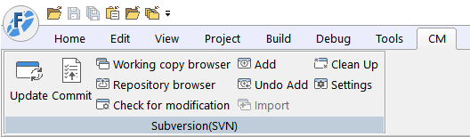
| Panel | Menu | Submenu | Description | Shortcut |
|---|---|---|---|---|
| Subversion(SVN) | Update | Working copy파일을 Remote Repository의 파일로 갱신/td> | ||
| Commit | Working copy의 추가, 수정, 삭제한 파일들을 Remote Repository로 업데이트 | |||
| Working copy browser | Working copy browser : 로컬 탐색기 | |||
| Repository browser | Remote Repository Browser : 원격 저장소 탐색기 | |||
| Check for modification | Check modified : 변경된 파일 리스트 보기 | |||
| Add | Non-Versioned 파일을 형상관리에 추가(Commit 필요) | |||
| Undo Add | Added 된 파일을 취소 | |||
| Import | 처음 형상관리를 하기 위해 로컬의 파일을 원격 저장소로 업로드 | |||
| Clean Up | 형상관리중에 파일 잠김 꼬임등으로 SVN처리가 안될 때 초기화 | |||
| Settings | 형상관리 설정 |
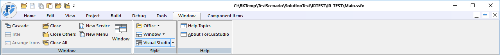
| Panel | Menu | Submenu | Description | Shortcut |
|---|---|---|---|---|
| Window | Cascade | 전체 모드가 아닌 경우 Child Window 정리 | ||
| Title | ||||
| Arrange Icons | ||||
| Close | 편집 중인 시나리오 파일 닫기 | |||
| Close Others | 편집 중인 시나리오 파일을 제외한 나머지 모두 닫기 | |||
| Close All | 시나리오 파일 모두 닫기 | |||
| New Service | 서비스 시나리오 생성 | |||
| New Menu | 메뉴 시나리오 생성 | |||
| Window | 오픈 도큐먼트 창 | |||
| Style | Office | Office 2007 (Aqua Style) | ||
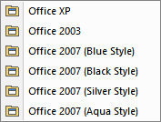 |
Office XP | |||
| Office 2003 | ||||
| Office 2007 (Blud Style) | ||||
| Office 2007 (Black Style) | ||||
| Office 2007 (Silver Style) | ||||
| Office 2007 (Aqua Style) | ||||
| Window | Window 7 | |||
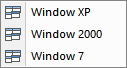 |
Window XP | |||
| Window 2000 | ||||
| Window 7 | ||||
| Visual Studio | Visual Studio 2008 | |||
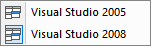 |
Visual Studio 2005 | |||
| Visual Studio 2008 | ||||
| Help | Help Topics | 도움말 | ||
| About ForCusStudio |
Category Component Items (Shortcut : End)

| Group | Item Menu | Item Name | Description |
|---|---|---|---|
| Global | 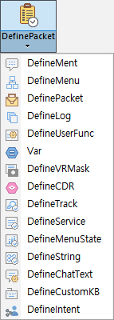 |
DefinePacket |
전문을 정의 합니다. |
| DefineMent | 멘트 리스트를 정의 합니다. | ||
| DefineMenu | 메뉴트리를 정의 합니다. | ||
| DefineLog | 로그 정보를 정의 합니다. | ||
| DefineUserFunc | 사용자 함수를 정의 합니다. | ||
| Var | 전역변수를 정의 합니다. | ||
| DefineVRMask | 음성인식어 마스크 리스트를 정의 합니다. | ||
| DefineCDR | User CDR 처리를 위한 Stored Procedure를 정의 합니다. | ||
| DefineTrack | Tracking ID를 정의 합니다. | ||
| DefineService | 서비스 코드를 정의 합니다. | ||
| DefineMenuStat | 사용자 메뉴 통계 항목을 정의 합니다. | ||
| DefineString | 문자열 파싱을 위한 포멧을 정의 합니다. | ||
| DefineChatText | 쳇 텍스트 리스트를 정의 합니다. | ||
| DefineCustomKB | 사용자 정의 가상 키보드 리스트를 정의 합니다. | ||
| DefineIntent | Intent 를 정의 합니다. | ||
| Telephony | 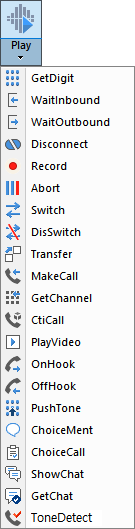 |
Play | 멘트를 송출 합니다. |
| GetDigit | 디지트를 입력 받습니다. | ||
| WaitInbound | 전화 받기를 대기 합니다. | ||
| WaitOutbound | 전화 걸기를 대기합니다. | ||
| Disconnect | 전화 연결을 끊습니다. | ||
| Record | 녹음을 합니다. | ||
| Abort | 멘트 송출, 녹음등 미디어 처리를 중지 시킵니다. | ||
| Switch | 설정한 채널을 라우팅 합니다. | ||
| DisSwitch | 라우팅 연결을 해제 합니다. | ||
| Transfer | 호 전환을 수행 합니다. | ||
| MakeCall | 전화를 겁니다. | ||
| GetChannel | 전화를 걸기 위해 채널을 할당 받습니다. | ||
| CtiCall | CTI 를 연동 합니다. | ||
| PlayVideo | 영상을 송출 합니다. | ||
| OnHook | 전화를 끊습니다. | ||
| OffHook | 전화를 받습니다. | ||
| PushTone | 디지트 톤을 송출 합니다. | ||
| ChoiceMent | 멘트 타입을 선택합니다. | ||
| ChoiceCall | 멀티 콜에서 콜을 선택 합니다. | ||
| ShowChat | 쳇을 전송 합니다. | ||
| GetChat | 쳇 입력을 기다립니다. | ||
| ToneDetect | MakeCall 이 후 Tone 분석을 통한 연결을 감지합니다. | ||
| VR | 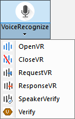 |
VoiceRcognize | 음성인식을 합니다. |
| OpenVR | 음성인식 채널을 할당 합니다. | ||
| CloseVR | 음성신식 채널을 해제 합니다. | ||
| RequestVR | 음성인식을 시작 합니다. | ||
| ResponseVR | 음성인식 결과를 기다립니다. | ||
| SpeakerVerify | 화자인증을 합니다. | ||
| Verify | 음성인식 관련 통계 데이터를 생성 합니다. | ||
| iWeb | 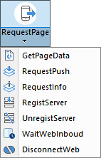 |
RequestPage | 웹 페이지를 출력 하도록 요청 합니다. |
| GetPageData | 웹 페이지에 입력된 값을 웹 서버에 요청하여 받습니다. | ||
| RequestPush | 웹 페이지 또는 이미지를 모바일 폰의 앱으로 전송하여 출력 합니다. | ||
| RequestInfo | 요청정보를 가져옵니다.(서비스 정보, 서비스 코드, Application 활성정보) | ||
| RegistServer | ICM에 WCE서버 정보를 등록 합니다. | ||
| UnregistServer | ICM에 등록된 WCE서버 정보를 해제 합니다. | ||
| WaitWebInbound | 지정된 시간만큼 Connect Request를 기다립니다. | ||
| DisconnectWeb | iWeb Web Call 을 종료합니다. | ||
| AI | 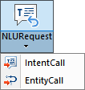 |
NLURequest | STT 입력 Text를 NLU 를 통하여 분석하여 Intent 및 Entity를 얻는다. |
| IntentCall | NLU 로 분석된 Intent 에 해당하는 Intent 입력 SubCall 또는 MenuCall 호출한다. | ||
| EntityCall | Intent 에 해당하는 Entity를 입력받기 위한 Flow 생성, 호출한다. | ||
| Route | 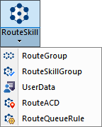 |
RouteSkill | 상담원 스킬 및 레벨에 따라서 호를 분배 하는 기능을 제공합니다 |
| RouteGroup | 상담 그룹 별로 호를 분배 하는 기능을 제공합니다. | ||
| RouteSkillGroup | 상담 스킬그룹 별로 호를 분배 하는 기능을 제공합니다. | ||
| UserData | 사용자 데이터 값을 읽어 오거나 갱신 합니다. | ||
| RouteACD | 큐에 미리 설정된 착신 목적지를 기준으로 호를 분배 하는 기능을 제공합니다. | ||
| RouteQueueRule | 큐에 정의된 라우팅 옵션을 기준으로 호를 분배 하는 기능을 제공합니다. | ||
| Flow | 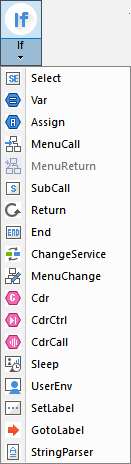 |
If | 조건을 비교하여 참과 거짓으로 분기 합니다. |
| Select | 조건을 비교하여 다중 분기 합니다. | ||
| Var | 지역변수를 정의 합니다. | ||
| Assign | 변수에 값을 할당 합니다. | ||
| MenuCall | 정의된 메뉴를 호출 합니다. | ||
| MenuReturn | 메뉴 시나리오에서 리턴 합니다. | ||
| SubCall | 시나리오를 호출 합니다. | ||
| Return | 시나리오에서 리턴 합니다. | ||
| End | 시나리오를 끝냅니다. | ||
| ChangeService | 서비스 시나리오를 변경 합니다. | ||
| MenuChange | 메뉴를 변경 합니다. | ||
| Cdr | CDR 데이터를 생성 합니다. | ||
| CdrCtrl | CDR 컨트롤러로 CDR을 초기화 합니다.(Init CDR) | ||
| CdrCall | 콜이 종료될 때 CDR이 처리되지 않고 바로 CDR을 처리합니다. | ||
| Sleep | 설정한 시간 만큼 중지 합니다. | ||
| UserEnv | 사용자 환경 파일을 사용 합니다. | ||
| SetLabel | 이동할 라벨을 설정 합니다. | ||
| GotoLabel | 설정한 SetLabel 아이템으로 이동 합니다. | ||
| StringParser | 문자열을 입력받아 정의된 포멧에 따라 파싱 합니다. | ||
| UserFunc | 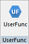 |
UserFuncCall | 사용자 함수를 호출 합니다. |
| Packet | 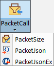 |
PacketCall | 전문을 보내고 받습니다. |
| PacketSize | 전문을 보내기 전에 전문 사이즈를 구합니다. | ||
| PacketJson | 전문 정의 없이 Json 전문을 보냅니다. | ||
| PacketJsonEx | 전문 정의 없이 Json 전문을 고도화하여 보냅니다. | ||
| DB | 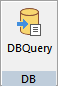 |
DBQuery | DB 쿼리를 요청 합니다. |
| Log | 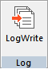 |
LogWrite | 로그를 기록 합니다. |
| Event | 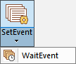 |
SetEvent | 이벤트를 세팅 합니다. |
| WaitEvent | 이벤트를 기다립니다. | ||
| Tracking | 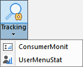 |
Tracking | 트래킹 데이터를 생성 합니다. |
| ConsumerMonit | 사용자 모니터링을 합니다. | ||
| UserMenuStat | 사용자 메뉴 통계를 처리 합니다. | ||
| Etc | 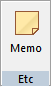 |
Memo | 메모를 생성 합니다. |